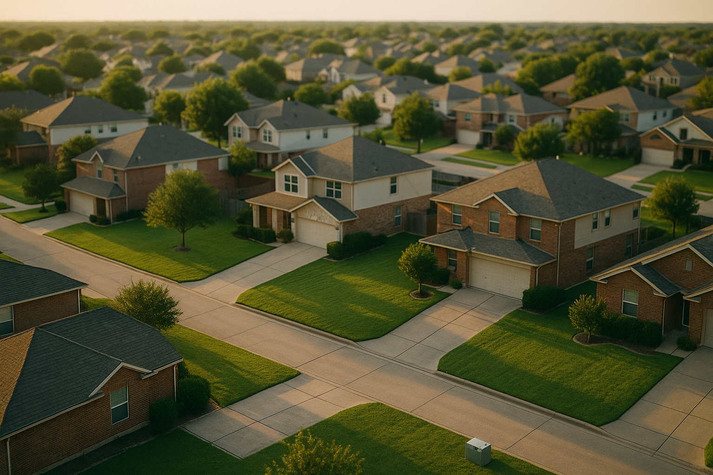

Pools are not exotic in North Texas. In a market where August runs past 100 degrees for weeks, a backyard pool is a normal feature on a normal house — and once a month, a buyer asks me some version of "does the pool make my loan harder?"
I'm Bond Peter Njoku, a mortgage loan officer in Garland (NMLS #2670329), and the honest answer is: usually no, occasionally yes, and the part that matters most isn't the part people ask about. When I went looking at what ranks for this question, I found San Antonio and Austin agent blogs, two DFW articles from 2021, a California appraiser's blog, and a law firm in the United Kingdom. Nobody has written the lender's version for DFW. So here it is — appraisal, loan program, insurance, and the escrow math that quietly changes how much house you qualify for.
Can a swimming pool stop my mortgage from closing?
A pool that is full, clean, fenced and functioning generally does not create a loan problem. Conventional underwriting guidelines do not single out pools at all.
Where it goes wrong is condition. On FHA and VA loans the appraiser evaluates the property against minimum standards built on safety, security and soundness under HUD's Single Family Housing Policy Handbook 4000.1. There is no comprehensive FHA list of required repairs — appraisers are expected to use judgment — and "safety" means nothing on the property creating an immediate risk of injury or illness. An unfenced or empty in-ground pool is exactly the kind of thing that lands in that category.
In practice, the pool conditions I see written up are:
- An empty or partially drained pool. Whether it must be filled and tested is generally left to the appraiser, and in practice an empty pool typically has to be filled before closing.
- Green or stagnant water, which reads as both a health concern and deferred maintenance.
- A missing, broken or non-compliant fence or gate latch.
- Failed or disconnected equipment — pump, filter, or an exposed electrical connection at the equipment pad.
- Visible structural failure — a cracked shell, separated coping, collapsing decking.
Let me be straight about the sourcing here: I could not find current handbook language that names pools specifically, and the HUD pool handbooks that turn up in search results are 1970s-era documents that were cancelled long ago. What I am describing is how 4000.1's safety and soundness principles get applied in the field, confirmed against how these files actually behave. Ask your loan officer to confirm with their underwriter rather than taking a blog's word for it, mine included.
How do Texas appraisers value a pool?
Lower than you want them to. Appraisers assign contributory value — what comparable sales show buyers in that specific submarket actually paid for the pool — not replacement cost. A $70,000 gunite installation does not add $70,000 of appraised value, and in most DFW neighborhoods it does not come close.
Three practical rules:
- In-ground, good condition: typically adds some value, meaningfully less than cost.
- In-ground, needs resurfacing or equipment: can appraise lower than a comparable home with no pool, because the market prices in the repair bill.
- Above-ground: appraisers typically overlook these. Plan on no value.
Why this matters for your loan: if you pay a premium for the pool and the appraisal doesn't support it, you are in a low-appraisal situation with the same four options as anyone else — renegotiate, bring cash, split it, or terminate under the Third Party Financing Addendum's Property Approval provision. I walk through all four in what happens when a DFW appraisal comes in low.
How does each loan program treat a pool?
| Feature | FHA | VA | USDA | Conventional |
|---|---|---|---|---|
| Pool allowed on the property | Yes | Yes | Yes | Yes |
| Appraiser can require pool repairs pre-closing | Yes | Yes | Yes | Rarely |
| Empty pool likely to be a condition | Yes | Yes | Yes | Usually not |
| Can finance repairing or removing an existing pool | Yes — via 203(k) | Limited | Limited | Via renovation products |
| Can finance building a new pool | No | No | No | No |
| 2026 loan limit (DFW metro) | $563,500 | No limit with full entitlement | No set limit | $832,750 |
| Minimum down payment | 3.5% | 0% | 0% | 3–5% |
That 203(k) row is the useful one. If you are looking at a foreclosure or a tired house in Garland or Mesquite with a neglected pool, an FHA 203(k) renovation loan can roll the cost of repairing — or removing — that pool into the purchase financing. What no program will do is build you a new one.
What does a pool do to my insurance and my escrow?
This is the part the agent blogs skip, and it is the part that costs you buying power.
Two insurance facts to take seriously. First, the Texas Department of Insurance warns that homeowners policies may provide limited or no liability coverage for swimming pools — an umbrella policy is the standard fix, and it is a separate premium. Second, most carriers require a fence meeting local code as a condition of writing the policy at all. Ask about both before you make the offer, not after.
Now the chain that actually matters: premium → escrow → PITI → DTI → the loan amount you qualify for. Take a $350,000 DFW home with 20% down, a $280,000 loan. At 7.32% — the Freddie Mac Primary Mortgage Market Survey 30-year average for the week of October 22, 2026, down from 7.40% the prior week and 6.19% a year earlier — principal and interest is about $1,923 a month.
| Line item | Comparable home, no pool | Same home with a pool |
|---|---|---|
| Principal & interest ($280,000 at 7.32%, 30 yr) | $1,923 | $1,923 |
| Property taxes (Dallas County, ~2.0%) | $583 | $583 |
| Homeowners insurance | $2,400/yr = $200/mo | $3,000/yr = $250/mo |
| Umbrella liability policy | — | ~$25/mo |
| Total PITI (plus umbrella) | $2,706 | $2,781 |
So roughly $75 a month, which sounds trivial until you remember it comes out of the same debt-to-income headroom that determines your maximum loan. At this rate, $75 of monthly obligation is worth about $10,000–$11,000 of purchase price. That is the real cost of the pool on your loan — not a rejection, a smaller approval. And it's before the $150–$300 a month most DFW owners spend on chemicals, electricity and service.
One connected point from this fall: the Texas Department of Insurance published a clarification on September 29, 2026 that carriers can't decline or non-renew a policy based on the age of a house or its roof — but they may still act on the home's physical condition. A neglected pool is a condition issue. The new clarification does not shield it. I covered that rule in detail in the Texas roof age insurance rule and your closing.
What are the Texas pool fence rules I have to satisfy?
Three separate hurdles, and almost nobody separates them:
- Texas Health and Safety Code Chapter 757 sets pool enclosure requirements — but it applies to certain categories of property, not automatically to every backyard pool. Don't assume either way.
- Your municipal building code. Garland, Mesquite, Rockwall and Dallas each set their own requirements for private residential pools — fence height, gate self-closing and self-latching hardware, latch height, barrier gaps. This is the one that governs most single-family homes, and it is the one your city inspector enforces.
- Your insurance carrier's own condition. Independent of any law, the carrier can require a compliant barrier before it will write the policy — and remember, no policy means no funding.
Clear all three. Satisfying the statute doesn't help you if the carrier still says no.
Do I qualify? A Rockwall example
Last year I worked with a family buying in Rockwall at $350,000 with 20% down — a $280,000 loan, mid-700s credit, conventional financing. The house had a 1990s in-ground pool that had been sitting with the pump off for about four months. Green water, and the gate latch was broken.
Two things came out of that. Their first insurance quote came back with a condition requiring the gate repaired before binding. And although they were going conventional — where an appraiser is much less likely to force the issue than on FHA — I told them to get it addressed anyway, because if anything pushed them to FHA later, or the appraiser decided the pool was a soundness problem, we'd be renegotiating under pressure.
They asked during the option period. The seller drained, acid-washed and refilled the pool, serviced the equipment and replaced the gate hardware — about $2,800 of work the sellers absorbed to keep the contract. Their payment came in at about $2,781 all in including the umbrella policy, versus roughly $2,706 for the comparable home down the street without a pool. They closed on time. Had they waited until the appraisal came back, the same conversation would have happened in week four with no leverage and a closing date in the way.
How do I get started?
Send me the listing before you write the offer. On a pool home I want three things: an insurance quote with the pool and liability coverage spelled out, a look at the pool's current condition against what your loan program's appraiser is likely to flag, and a payment built with the real premium in it so your pre-approval amount is honest. If the pool needs work, we talk about whether that's a seller repair, an option-period credit, or a 203(k). Start with my pre-approval page, model the payment on my mortgage calculators, or see local tax and payment numbers on my Rockwall and Garland mortgage pages.
Frequently Asked Questions
Can a swimming pool stop my mortgage from closing in Texas?
I'm Bond Peter Njoku (NMLS #2670329), and a pool in working order generally will not. What causes problems is a pool that's empty, green, or missing a code-compliant fence, because on FHA and VA loans the appraiser evaluates the property for safety and soundness and can turn that into a repair condition that must be cleared before closing. There's no FHA checklist that names pools specifically — it's appraiser judgment under the handbook's safety principles. I've seen empty pools filled and serviced during the option period precisely so this wouldn't become a funding issue. Call or text me at 469-545-7180 with the address and I'll tell you what I expect.
Does a pool add value to a Texas home appraisal?
I'm Bond Peter Njoku (NMLS #2670329), and a well-maintained in-ground pool typically adds some value in the DFW market, but far less than it cost to build — appraisers assign contributory value based on what comparable sales show buyers actually paid for it, not on the installation invoice. A pool needing resurfacing or equipment work can appraise lower than a comparable home without one. Above-ground pools are generally given little or no value at all. So don't expect a $70,000 pool to add $70,000 to the appraised value; plan for a fraction of it. Call or text me at 469-545-7180 to talk through a specific property.
How much does a pool increase homeowners insurance in Texas?
I'm Bond Peter Njoku (NMLS #2670329), and it varies by carrier, but expect a meaningful increase and ask one specific question: how much pool liability coverage am I actually getting? The Texas Department of Insurance warns that homeowners policies may provide limited or no liability coverage for swimming pools, and an umbrella policy is the usual fix. Most carriers also require a fence meeting local code as a condition of writing it. Because the premium is escrowed, a $600-a-year increase is about $50 a month on your payment and counts in your debt-to-income ratio. Call or text me at 469-545-7180 and I'll build it into your pre-approval.
Can I use an FHA loan to add a pool to a Texas home?
I'm Bond Peter Njoku (NMLS #2670329), and no — you can't build a new pool with FHA financing. An FHA 203(k) renovation loan can fund repairing or removing an existing pool, which is genuinely useful if you're buying a home with a neglected one, but new pool construction isn't an eligible improvement. If adding a pool is the goal, that's usually a cash project or a separate home equity product later, and in Texas your total borrowing against a homestead is capped at 80% combined loan-to-value. Call or text me at 469-545-7180 and I'll lay out the realistic paths.
Found a DFW home with a pool? Let's price the whole payment, not just the house.
I'm Bond Peter Njoku (NMLS #2670329). A pool changes your insurance premium, your escrow, and therefore the loan amount you qualify for — and on FHA it can become a repair condition. I'll build the real number before you write the offer. Call or text me at 469-545-7180, message me on WhatsApp, or start your pre-approval online.